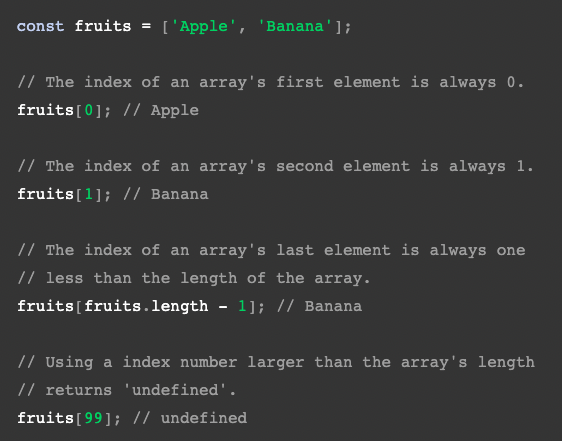
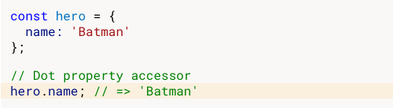

An analogy to describe JavaScript and the differences between HTML and CSS
JavaScript is a wizard that performs magic. The wizard works its magic having the ability to change how you
view
a webpage based on your interactions with it. Its spells can change the colour, position, remove and add
content
on a webpage, including storing information behind the scenes.
Explain control flow and loops using an example process from everyday life
Control flow is the sequence of actions you go through to complete a task. The sequence of actions must be in
order otherwise you won’t arrive at the tasks desired outcome. If you're shampooing your hair, you’ll need to
apply shampoo, scrub your hair and rinse. If you mess up that order, you’re in trouble! For example if you
rinse
your hair, scrub your hair and then apply shampoo then you’re not properly shampooing your hair.
Loops are iterative and performs a certain task during each repetition. It’s kinda like hammering a nail into
the wall. You need to hit the nail on the head with a hammer multiple times and after each hit the nail moves
further into the wall, and once the nails all the way in, there’s no more hammering!
Explain the difference between accessing data from arrays and objects.
Arrays hold a list of information, each piece of information has a number associated with it called an index
number. An array is a single variable, and can be added to objects as attributes.
Objects hold information (key value pairs) inside their attributes. Objects can have
multiple attributes with values, which give the object its make-up, for example the 'car' object may have the
attributes
of
brand: Toyota, color: blue, model: Corolla and milage: 156,000. The objects attributes can be stored as
numbers, strings, booleans, arrays and
more. To
access an object you can call the objects name and it will return everything there is to know about the
object,
or you can call specific attributes of the object by calling the object.attribute.

Explain what functions are and why they are helpful
Functions contain snippets of code that complete a certain task. The beauty of functions is that it
prevents you from having to duplicate your code instead
you call the functions name whenever you want the tasks inside it to be executed.
Describe what the DOM is and an example of how you might interact with it
The DOM (Document Object Model) sees your webpage as a family-tree like structure, with each branch
representing a part of your webpage. This structure allows the user to manipulate the content, look and
structure of a
website
using JavaScript. You can interact with it using commands that identify parts of the website
you're wanting to manipulate. This can be done by selecting html #ids, classes or elements and more!
Eg document.getElementById('myContent').style.color = "blue";